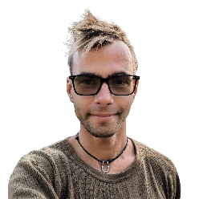

|  |
(415) 314-0797
|
Worked on Philanthropy Cloud, a platform that transforms our customers into active philanthropists by simplifying donations, volunteering, and running awareness campaigns. Played a key role in coming up with simple solutions to complex challenges, collaborating closely with product and design teams. Stack: React, GraphQL, Scala
Worked on campaign management and analytic tools which allow governments and NGOs to collect ground truth data and provide humanitarian aid, public health and disaster relief programs in developing countries. Engineering best practices included: rigorous linting rules, strong-typing (Flow), detailed PRs, as well as the automated test suite (Nightwatch), which I setup to assist the QA team with test coverage. Stack: React, Redux and Scala,
Apple Product Documentation: Developed Node microservices for publishing Apple product help content as well as React tools for content creation. Supported infrastructure for delivering multi-format, multi-language content distribution across various destinations.
Machine Learning: Initiated and led a machine learning project. Purchased hardware, set up a collaborative environment on Linux using Docker and Jupyter, handled dataset cleaning and preprocessing, managed model training and deployment using Tensorflow. Additionally, provided mentorship and support to interns on their ML experimental projects.
Headed the optimization of JavaScript ad serving script (3 billion servings a month). Inspired by Pivotal Labs methodologies, our team ensured consistent test coverage, practiced pair programming and learned to ❤ Vim. Developed features for Supply Side Platform (SSP) and Demand Side Platform (DSP) offerings, analyzed campaign discrepancies and supported Android SDK integrations.
Created a service on AWS to dynamically resize and crop image assets, designed for high traffic volumes.
Developed AOL Mail web application for tablets and phones. Achieved native-like performance on the original iPad and Kindle Fire in the early days of Single Page Applications. Stack: Google Closure
Throughout the years I've been part of various incredible teams: Zootoo (a pet lovers social network), EditVideo (a web based video editing software running on Rails, Python and FFmpeg), DipStudio (web development agency, where we won a BBC award at a pitch competition in Cannes).
Celsius/Fahrenheit converter app with a learning game based on an intuitive approach to teach users a six-point-reference method to become fluent in both systems. After numerous iterations achieved great UX, received excellent reviews and 100K downloads. Stack: PhoneGap webapp for iOS
Built an algorithmic high frequency trading system and designed a strategy that utilizes Relative Strength Index (RSI) and Simple Moving Average (SMA) to generate trading signals. The system includes backtesting, simulation and live trading.
Recruited and led a team of over 40 volunteers and contractors. Led the development of custom solutions for managing grants and logistics to provide 24.5 million dollars in humanitarian aid to over 2.3 million Ukrainians. Designed a team collaboration process that allowed us to increase our impact tenfold.